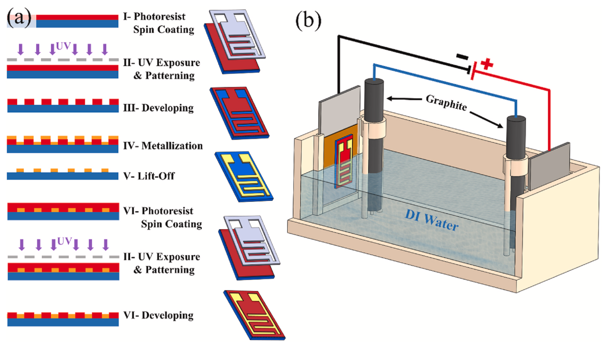
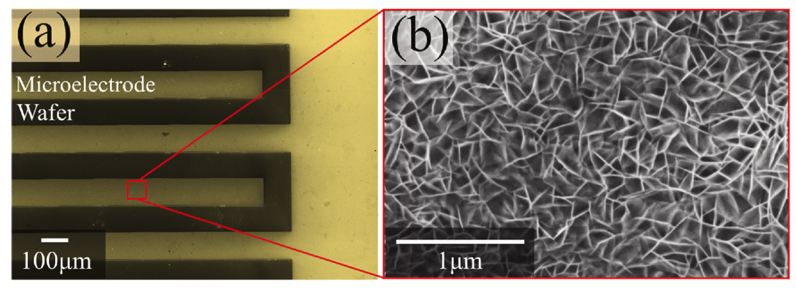

Microsupercapacitor Fabrication
Interdigitated Electrodes & Bipolar Graphene
Training in On-Chip Energy Storage | C-MEMS & Bipolar Electrochemistry
🔬 Skills Acquired: Photolithography, Interdigitated Electrode Design, E-beam Evaporation, Bipolar Electrochemistry, Electrochemical Testing (CV, EIS, GCD)
📚 Reference: Fabricated similar interdigitated electrodes and structures as described in peer-reviewed publications and patents from my research group (Khakpour et al., J. Power Sources 2022; US Patent 11,605,507)
Project Overview
During the first two years of my Ph.D., I underwent extensive training in microsupercapacitor (MSC) fabrication at the Advanced Materials Engineering Research Institute (AMERI) cleanroom facility. This training covered the entire fabrication process from photolithographic patterning of interdigitated gold microelectrodes to bipolar electrochemistry (BPE) for depositing vertically aligned reduced graphene oxide (rGO). These skills directly translate to my sensor projects, where interdigitated electrode fabrication is a critical step.
What are Microsupercapacitors (MSCs)?
Microsupercapacitors are miniaturized energy storage devices designed for on-chip integration with microelectronic components. They offer advantages over conventional batteries and electrolytic capacitors including higher power density, longer lifetime, lower heating effects, and better safety. The key to high-performance MSCs is maximizing electrode surface area while minimizing ion diffusion distances—achieved through interdigitated electrode designs and vertically aligned graphene structures.
Key Skills & Techniques Acquired
Microsupercapacitor Fabrication Process Flow
Step 1: Substrate Preparation
4-inch Si/SiN (100) wafer cleaned with acetone and methanol, followed by HMDS adhesion promoter spin coating.
Step 2: Photoresist Spin Coating
AZ 1518 Photoresist: Spin-coated at 500 rpm for 10 seconds, then 2900 rpm for 30 seconds to achieve ~2 μm thickness.
Step 3: Soft Bake
60 seconds at 100°C on a hot plate to evaporate solvents.
Step 4: UV Exposure (Photolithography)
OAI 800 mask aligner used for pattern transfer. Exposure dose: 60 mJ/cm² for interdigitated electrode pattern.
Step 5: Development
AZ 400 MIF developer (4:1 DI water to developer) for ~60 seconds to reveal patterned photoresist.
Step 6: Post-Development Bake
20 seconds at 65°C, then 70 seconds at 115°C.
Step 7: O₂ Plasma Cleaning (RIE)
100 W power for 60 seconds to remove any remaining photoresist residue.
Step 8: Metal Deposition (E-beam Evaporation)
Cr/Au metallization: 20 nm chromium (adhesion layer) + 100 nm gold (conductive layer) using CHA evaporator.
Step 9: Lift-off
Sonication bath in AZ EBR solvent for 2 hours, followed by acetone and IPA rinsing, then N₂ drying.
Step 10: Sacrificial Photoresist Layer
Repeat steps 1-6 to deposit and pattern a sacrificial photoresist layer between interdigitated fingers to prevent lateral graphene growth during BPE.
Step 11: Bipolar Electrochemistry (BPE) for rGO Deposition
Au-MCC mounted on negative feeding electrode in DI water. Two graphite rods (bipolar electrodes) connected externally. 45V DC applied for 24 hours with magnetic stirring (150 rpm). Vertically aligned rGO deposited on Au microelectrodes.
Step 12: Post-Processing
Immersion in AZ EBR for 120 seconds to remove sacrificial photoresist, followed by IPA/DI water rinse and N₂ drying.


Interdigitated Electrode Specifications
| Parameter | Value |
|---|---|
| Number of Fingers | 32 total (16 per side) |
| Finger Length | 6040 μm |
| Finger Width | 100 μm |
| Finger Spacing | 100 μm |
| Metal Thickness | 120 nm (20 nm Cr + 100 nm Au) |
| Geometric Surface Area (per side) | 9.66 mm² |
| Total Electrode Area | 19.33 mm² |
| Device Volume (unpackaged) | ~0.04 mm³ |
Bipolar Electrochemistry (BPE) for Graphene Deposition
What is BPE?
Bipolar electrochemistry is an environmentally friendly, single-step technique for exfoliation, reduction, and deposition of graphene in deionized water at room temperature. The process eliminates the need for harsh chemicals, high temperatures, or vacuum systems required by traditional methods like CVD or thermal decomposition.
BPE Cell Configuration:
- Feeding Electrodes: Stainless steel 316 (positive and negative), 9 cm apart
- Bipolar Electrodes: Two graphite rods, 7 cm apart, electrically connected externally
- Electrolyte: Deionized water (no additives)
- Voltage: 45 V DC applied for 24 hours
- Stirring: Magnetic stirring at 150 rpm for uniform deposition
Vertically Aligned Graphene Structure:
- Vertically aligned nanosheets (not flat-layered)
- Porous network with pore size ~100 nm
- High surface area for enhanced capacitance
- Short ion diffusion paths for high-frequency response
- Raman Iᴅ/Iɢ ratio: ~0.78 (highly reduced)
Equipment & Tools Used
- Spin Coater (Headway Research)
- OAI 800 Mask Aligner
- Hotplates (soft/post-exposure bakes)
- MARCH RIE System (O₂ plasma)
- CHA E-beam Evaporator (Cr/Au deposition)
- Sonication Bath (lift-off)
- Bipolar Electrochemistry Cell (custom 3D printed)
- Agilent DC Power Analyzer (45V for BPE)
- JEOL 7000 SEM (morphology)
- Raman Spectrometer (material characterization)
- Bio-Logic VMP3 Potentiostat (CV, GCD, EIS)
Reference Publications (Group Peers)
- Khakpour et al. - Vertically aligned graphene MSCs (J. Power Sources 2022)
- US Patent 11,605,507 - Microsupercapacitors and methods of fabricating
Connection to My Sensor Research
The microsupercapacitor training directly enabled my subsequent sensor research in several ways:
- Interdigitated Electrode Fabrication: Same photolithography process used for my pressure sensor electrodes
- Cleanroom Protocols: Mastering the same facilities used for MEMS pressure sensor fabrication
- Electrochemical Characterization: CV, EIS, and GCD skills applied to supercapacitive pressure sensor testing
- Microfabrication Expertise: Understanding of metal deposition, lift-off, and patterning for sensor electrodes
Conclusion
This comprehensive training provided me with hands-on experience in microsupercapacitor fabrication including photolithography of interdigitated electrodes, e-beam evaporation, lift-off processes, bipolar electrochemistry for vertically aligned graphene deposition, and electrochemical characterization (CV, GCD, EIS). I successfully fabricated interdigitated Au microelectrodes with 32 fingers (100 μm width/spacing, 120 nm thickness) and integrated vertically aligned rGO via BPE. The fabricated devices achieved excellent performance: 640 μF/cm² capacitance, 50,000-cycle stability, -81.2° phase angle at 120 Hz, and successful AC line filtering. These skills directly translate to my sensor projects, where interdigitated electrode fabrication is a critical enabling technology.